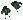
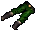
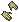
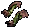
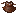
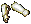
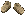

→
→
修理 ： 鍛冶
 →
→
修理 ： 鍛冶
回避 ： +10％
STR ： 10
速度 ： +35％
| 画像 | 名称 | 付加プロパティ |
| → |
Evocaricus | 武器ダメージ ： +50％
修理 ： 鍛冶 |
| → |
Maleki's Honor | 抵抗値 ： 3/3/3/3/3
修理 ： 鍛冶 |
| セット効果 | 自己修復 ： 3（各装備）
回避 ： +10％ STR ： 10 速度 ： +35％ |
| 画像 | 名称 | 付加プロパティ |
→ |
Hunter's Garb（手） | エルフ専用
ヒットポイント回復 ： 1 幸運 ： 50 抵抗値 ： 9/6/3/8/4 修理 ： 裁縫 |
 → → |
Hunter's Garb（腕） | |
→ |
Hunter's Garb（足） | |
 → → |
Hunter's Garb（胴） | |
| セット効果 | 自己修復 ： 3（各装備）
Stealth ： +40 DEX ： 10 抵抗値 ： 5/4/3/4/4（各装備） |
| 画像 | 名称 | 付加プロパティ |
 → → |
Plate of Honor（頭） | ヒットポイント回復 ： 1
命中 ： +5％ 抵抗値 ： 8/5/5/7/5 修理 ： 鍛冶 |
→ |
Plate of Honor（首） | |
 → → |
Plate of Honor（手） | |
 → → |
Plate of Honor（腕） | |
 → → |
Plate of Honor（足） | |
 → → |
Plate of Honor（胴） | |
| セット効果 | 自己修復 ： 3（各装備）
物理ダメージ反射 ： +25％ Chivalry ： +10 Night Sight 抵抗値 ： 2/5/5/3/5（各装備） |
| 画像 | 名称 | 付加プロパティ |
 → → |
Death's Essence（手） | ヒットポイント回復 ： 1
マナ回復 ： 1 抵抗値 ： 4/9/3/6/8 修理 ： 裁縫 |
 → → |
Death's Essence（腕） | |
 → → |
Death's Essence（足） | |
 → → |
Death's Essence（胴） | |
 → → |
Death's Essence（頭） | |
| セット効果 | 自己修復 ： 3（各装備）
マナコスト ： -10％ Necromancy ： +10 抵抗値 ： 4/5/3/4/4（各装備） |
| 画像 | 名称 | 付加プロパティ |
→ |
Greymist Armor（手） | マナ ： +2
魔法ダメージ ： +2％ 抵抗値 ： 7/7/3/4/4 修理 ： 裁縫 |
| → |
Greymist Armor（腕） | |
→ |
Greymist Armor（足） | |
→ |
Greymist Armor（胴） | |
| セット効果 | 自己修復 ： 3（各装備）
幸運 ： 100 Night Sight 抵抗値 ： 3/3/3/3/3（各装備） |
| 画像 | 名称 | 付加プロパティ |
 → → |
Swiftflight | 武器ダメージ ： +40％
修理 ： 弓工 |
 → → |
Feathernock | 装填タイプ ： Arrow/Bolt
装填数 ： 500 ダメージ修正 ： 10％ 矢重量軽減 ： 30％ |
| セット効果 | 自己修復 ： 3（各装備）
武器ダメージ ： +20％ DEX ： 8 命中 ： +15％ 速度 ： +30％ |
| 画像 | 名称 | 付加プロパティ |
→ |
Skull Helm Of The Grizzle | Night Sight
ヒットポイント ： +5 瞑想可 抵抗値 ： 6/10/5/7/10 修理 ： 裁縫 |
| → | Gauntlets Of The Grizzle | |
 → → |
Vambraces Of The Grizzle | |
→ |
Greaves Of The Grizzle | |
| → |
Tunic Of The Grizzle | |
| セット効果 | 自己修復 ： 3（各装備）
回避 ： +10％ STR ： 12 抵抗値 ： 3/5/3/3/5（各装備） |
| 画像 | 名称 | 付加プロパティ |
 → → |
Elven Leafweave（手） | Night Sight
マナ回復 ： 1 瞑想可 抵抗値 ： 4/9/3/6/8 修理 ： 裁縫 |
→ |
Elven Leafweave（腕） | |
 → → |
Elven Leafweave（足） | |
 → → |
Elven Leafweave（胴） | |
| セット効果 | 自己修復 ： 3（各装備）
魔法ダメージ ： +15％ INT ： 10 抵抗値 ： 4/5/3/4/4（各装備） |
| 画像 | 名称 | 付加プロパティ |
→ |
Assassin Armor（手） | スタミナ ： +2
速度 ： +5％ 抵抗値 ： 9/6/3/8/4 修理 ： 裁縫 |
| → |
Assassin Armor（腕） | |
→ |
Assassin Armor（足） | |
| → |
Assassin Armor（胴） | |
| セット効果 | 自己修復 ： 3（各装備）
Stealth ： +30 DEX ： 12 抵抗値 ： 5/4/3/4/4（各装備） |
| 画像 | 名称 | 付加プロパティ |
 → → |
Myrmidon Armor（頭） | STR ： 1
ヒットポイント ： +2 抵抗値 ： 7/7/3/5/3 修理 ： 鍛冶 or 裁縫 |
| → | Myrmidon Armor（首） | |
 → → |
Myrmidon Armor（手） | |
 → → |
Myrmidon Armor（腕） | |
 → → |
Myrmidon Armor（足） | |
 → → |
Myrmidon Armor（胴） | |
| セット効果 | 自己修復 ： 3（各装備）
幸運 ： 500 Night Sight 抵抗値 ： 3/3/3/3/3（各装備） |
| 画像 | 名称 | 付加プロパティ |
 → → |
Darkwood Crown | エルフ専用
ヒットポイント ： +2 回避 ： +5％ 抵抗値 ： 8/5/5/7/5 修理 ： 大工 |
 → → |
Darkwood Gorget | |
→ |
Darkwood Gauntlets | |
 → → |
Darkwood Pauldrons | |
 → → |
Darkwood Leggings | |
 → → |
Darkwood Chest | |
| セット効果 | 自己修復 ： 3（各装備）
物理ダメージ反射 ： 25％ STR ： 10 幸運 ： 100 抵抗値 ： 2/5/5/3/5（各装備） |
| 画像 | 名称 | 付加プロパティ |
 → → |
Arms of Compassion | Blessed
抵抗値 ： 8/11/6/8/7 修理 ： 鍛冶 |
 → → |
Legs of Honor | Blessed
抵抗値 ： 8/7/10/7/8 修理 ： 鍛冶 |
 → → |
Breastplate of Justice | Blessed
抵抗値 ： 10/7/8/7/8 修理 ： 鍛冶 |
 → → |
Gorget of Honesty | Blessed
抵抗値 ： 7/7/9/5/7 修理 ： 鍛冶 |
| → | Gauntlets of Valor | Blessed
抵抗値 ： 6/6/8/9/6 修理 ： 鍛冶 |
 → → |
Helm of Spirituality | Blessed
抵抗値 ： 8/8/7/9/8 修理 ： 鍛冶 |
→ |
Sollerets of Sacrifice | Blessed |
 → → |
Cloak of Humility | Blessed |
| セット効果 | 自己修復 ： 5（各装備）
抵抗値 ： 5/5/5/5/5（各装備） |
| 画像 | 名称 | 付加プロパティ |
 |
Knight's Norse Helm | ヒットポイント ： +1
抵抗値 ： 7/7/7/7/7 |
 |
Knight's Norse Helm | |
| Knight's Plate Helm | ||
 |
Knight's Bascinet | |
 |
Knight's Gorget | |
| Knight's Gloves | ||
 |
Knight's Arms | |
 |
Knight's Legs | |
 |
Knight's Breastplate | |
 |
Knight's Breastplate | |
| セット効果 | ヒットポイント ： +6
ヒットポイント回復 ： 2 マナ回復 ： 2 回避 ： +10％ 命中 ： +10％ 抵抗値 ： 28/28/28/28/28 |
| 画像 | 名称 | 付加プロパティ |
 |
Scout's Circlet | DEX ： 1
抵抗値 ： 7/7/7/7/7 瞑想可 |
 |
Scout's Small Plate Jingasa | |
 |
Scout's Studded Gorget | |
 |
Scout's Studded Sleeves | |
 |
Scout's Studded Tunic | |
| Scout's Studded Gloves | ||
 |
Scout's Studded Leggings | |
 |
Scout's Female Studded Armor | |
 |
Scout's Studded Bustier | |
| セット効果 | DEX ： +6
命中 ： +10％ 武器ダメージ ： +10％ ヒットポイント回復 ： 2 マナ回復 ： 2 抵抗値 ： 28/28/28/28/28 |
| 画像 | 名称 | 付加プロパティ |
 |
Sorceror's Hat | INT ： 1
秘薬コスト ： -10％ 抵抗値 ： 7/7/7/7/7 瞑想可 |
 |
Sorceror's Gorget | |
 |
Sorceror's Sleeves | |
 |
Sorceror's Tunic | |
| Sorceror's Female Armor | ||
| Sorceror's Gloves | ||
 |
Sorceror's Skirt | |
 |
Sorceror's Leggings | |
| セット効果 | INT ： +6
秘薬コスト ： -40％ マナコスト ： -5％ マナ回復 ： 2 回避 ： +10％ 抵抗値 ： 28/28/28/28/28 |
| 画像 | 名称 | 付加プロパティ |
 |
Etoile Bleue | 幸運 ： 150
ファストキャスト ： 1 キャストリカバリ ： 1 |
 |
Novo Bleue | |
| セット効果 | 幸運 ： +100
ファストキャスト ： +1 キャストリカバリ ： +4 ヒットポイント回復 ： 2 マナ回復 ： 2 |